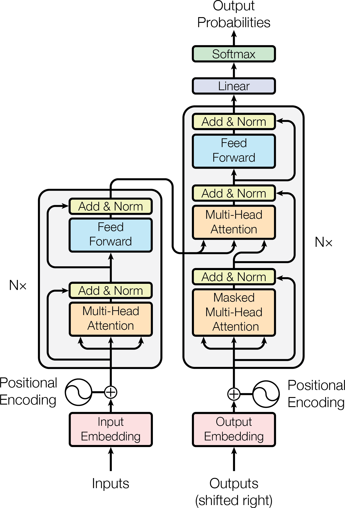
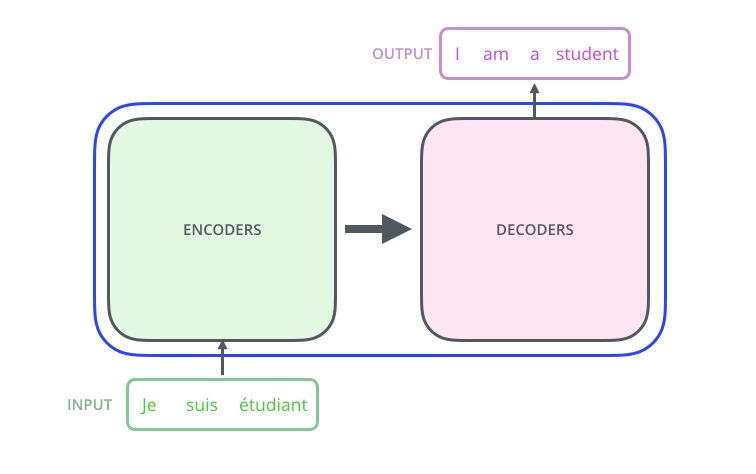
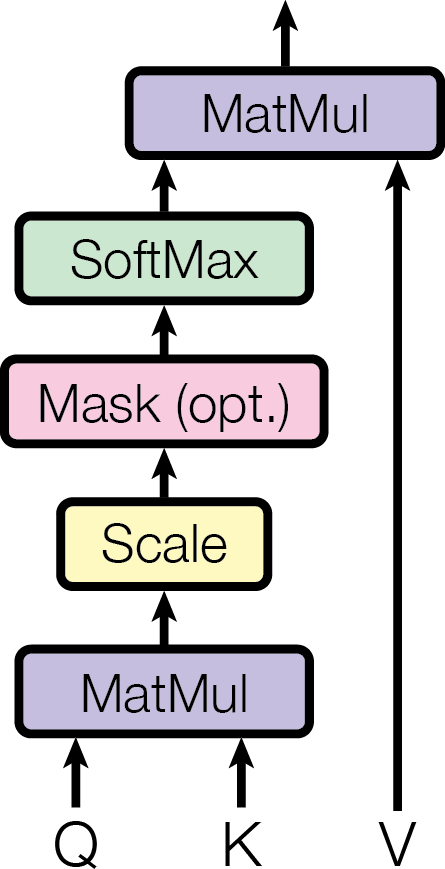
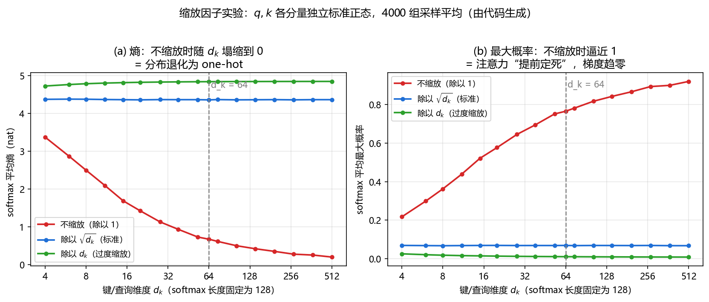
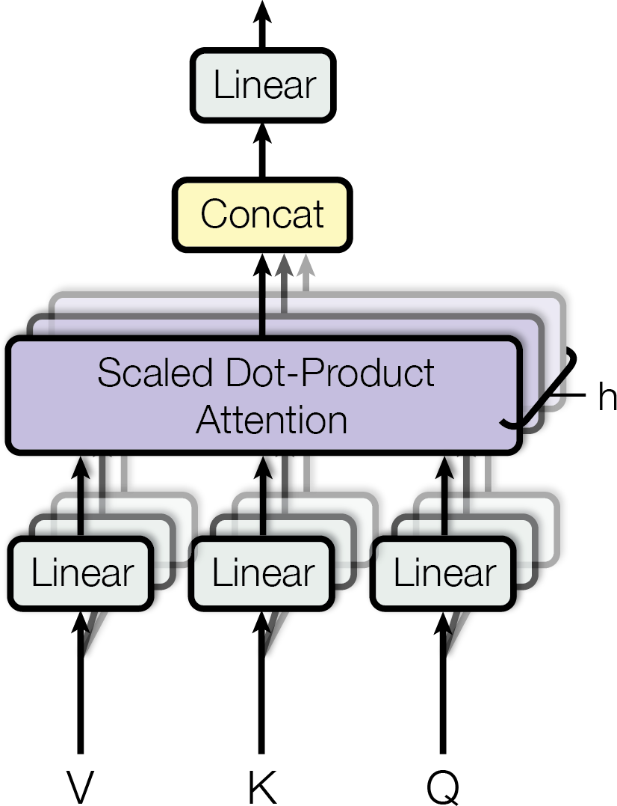
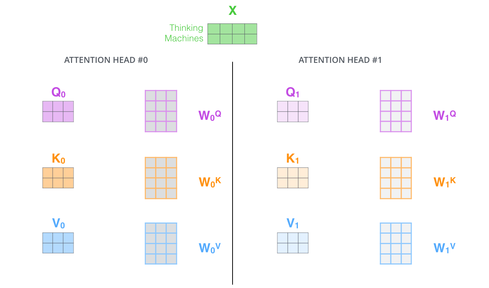
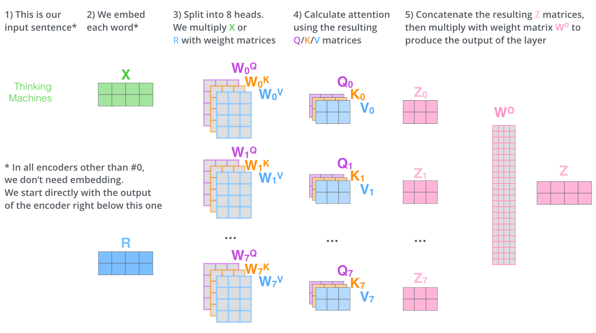
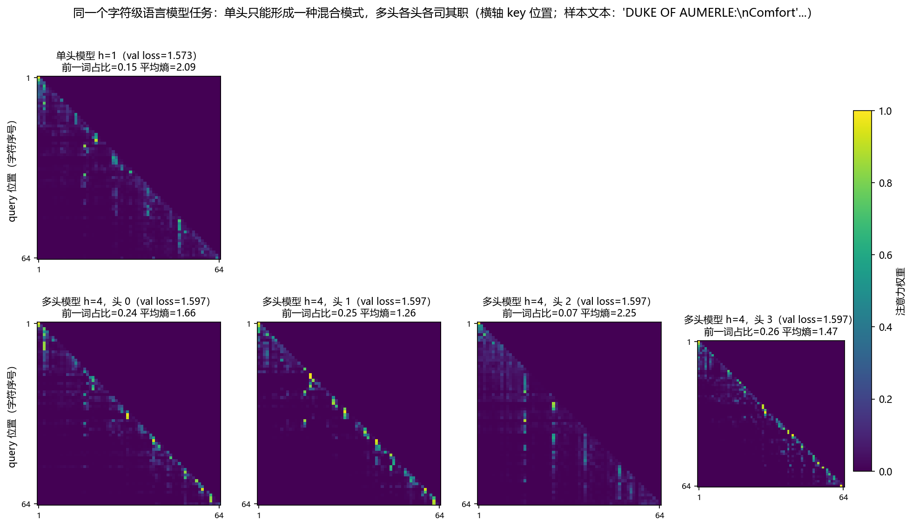
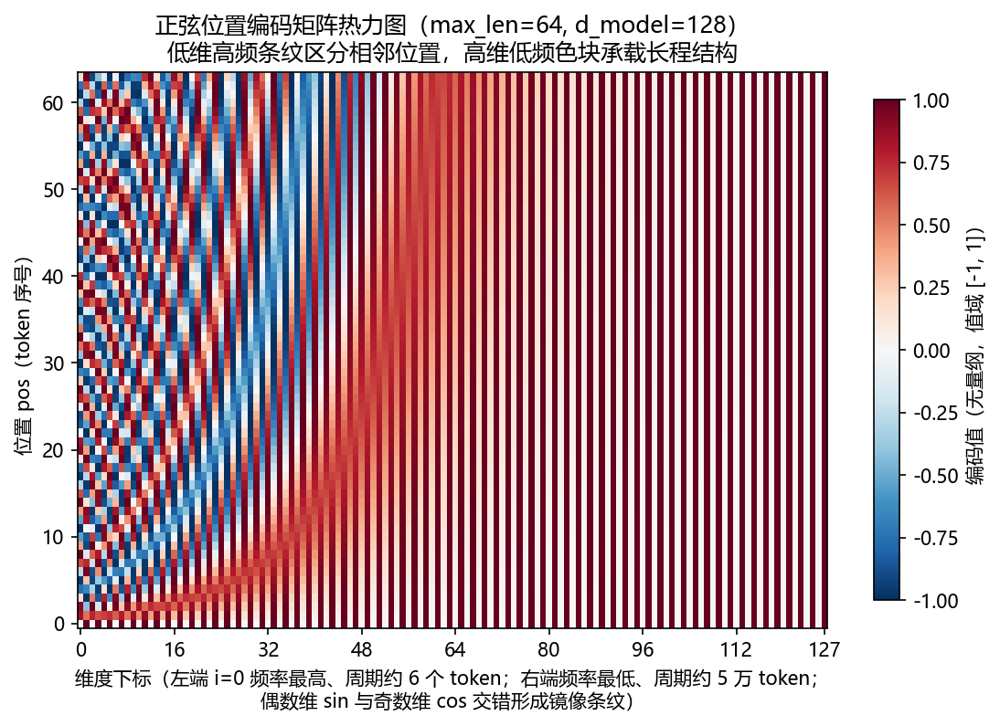

第 6 章 Transformer：把积木组装成语言模型¶
本章导读：第 3 章造好了积木——线性层、激活、LayerNorm/RMSNorm、残差连接， 并埋下了"Pre-LN 与 Post-LN 梯度有何不同"的伏线；第 5 章解决了输入表示——token id 如何携带语义（嵌入）与顺序（位置编码）。本章把这些零件组装成完整的 Transformer。 上半场严格按原始论文《Attention Is All You Need》的节次，把 2017 年的原版设计逐节讲透 ——原版的每个子层都是
LayerNorm(x + Sublayer(x))，即 Post-LN；下半场再讲它如何 一路演变成今天的 LLM（GPT-2 → LLaMA → Qwen）。学完本章你能：读懂任意模型的架构代码 与 config；从零写出约 150 行、可训练的 GPT；在 Shakespeare 上亲手训出一个会"写戏"的 小模型；并回答"原版到底是 post-norm 还是 pre-norm"这类高频面试题。预计阅读时间：100 分钟（含动手环节 30 分钟）。前置：第 3 章 （残差与归一化）、第 5 章（嵌入与位置编码）。
上半场：原论文逐节讲透¶
6.1 问题：RNN 的顺序计算与长程依赖瓶颈¶
2017 年之前，"序列到序列"任务（翻译是代表，论文称之为 sequence transduction）的 主角是 RNN/LSTM：按时间步逐个读入 token，用一个隐状态 \(\boldsymbol{h}_t\) 概括读到的 一切，再逐词生成译文。这个结构有两个结构性瓶颈，论文摘要里点名：
- 顺序计算：\(\boldsymbol{h}_t\) 必须等 \(\boldsymbol{h}_{t-1}\) 算完才能开始，\(T\) 个 词就是 \(T\) 步串行。GPU 上万个核心眼睁睁看着，并行能力用不上——训练慢的根源。
- 长程依赖：第 1 个词与第 \(T\) 个词之间的信息要在隐状态里接力 \(O(T)\) 步，路径越长 信号衰减越重、梯度越不稳定（第 3 章的同款故事在时间维度上重演）。
用一个翻译长句把两个瓶颈具体化：
The cat that the dog chased yesterday ran away.
猫 那只狗昨天追的 跑掉了。
译到"跑掉了"时必须回答：是谁跑掉了？主语 cat 与谓语 ran 之间隔着 7 个词的
插入语。逐词硬翻的 RNN 读完整插入语后，早已把 cat 挤出了隐状态的可用容量；而且
"追"（chased）出现在句中、"猫"（cat）出现在句首，源语与目标语词序严重不对齐。
理想方案是：生成每个目标词时，都能一步直达源句的任意位置、按相关度取回信息——
这正是注意力机制要担当的角色，本章把它变成唯一的运算。
论文把新架构命名为 Transformer，标题《Attention Is All You Need》就是宣言： 丢掉循环与卷积，只用注意力完成序列转换。效果（摘要原话的数值）：WMT 2014 英德翻译 28.4 BLEU，比已有最好结果（含多模型 ensemble）高 2 BLEU 以上；英法翻译 41.8 BLEU 单模型当时最优；而大模型只在 8 张 GPU 上训练了 3.5 天。
三个候选序列层的客观对比（论文 Table 1，\(n\) 为序列长、\(d\) 为表示维度、\(k\) 为卷积核 宽）：自注意力用 \(O(1)\) 步顺序操作、任意两位置路径长 \(O(1)\)，两项都碾压循环层的 \(O(n)\)——这是"为什么敢全用注意力"的定量依据，后面 6.5 节再回收这张表。
| 层类型 | 每层复杂度 | 最小顺序操作数 | 最大路径长度 |
|---|---|---|---|
| 自注意力 | \(O(n^2 \cdot d)\) | \(O(1)\) | \(O(1)\) |
| 循环 | \(O(n \cdot d^2)\) | \(O(n)\) | \(O(n)\) |
| 卷积 | \(O(k \cdot n \cdot d^2)\) | \(O(1)\) | \(O(\log_k(n))\) |
表 1：三类序列层的复杂度对比（译自论文 Table 1）。自注意力的代价是 \(n^2\) 的两两交互，换来完全并行与一跳直达。
6.2 架构总览：Encoder-Decoder（论文图 1）¶
为什么先看全景：注意力只是零件，翻译任务需要一台"读源句、产目标句"的完整机器。 原始 Transformer 采用当时机器翻译的标配骨架 Encoder-Decoder，论文图 1 是全书的 "心脏解剖图"，值得逐框读：

图 1：原始 Transformer 的 Encoder-Decoder 全景。左侧为编码器栈（N=6 层，每层"Multi-Head Attention + Feed Forward"两个子层，各自配 Add & Norm）；右侧为解码器栈（N=6 层，每层"Masked Multi-Head Attention + Multi-Head Attention + Feed Forward"三个子层）；底部为输入/输出嵌入与位置编码，顶部为 Linear + Softmax 输出下一词概率。（图源：Vaswani et al., Attention Is All You Need, arXiv:1706.03762；仅作教学用途）
把一句话"从输入到输出"走一遍（对应图 1 从下往上）：
- 源句（如
Je suis étudiant）分词成 token，经输入嵌入变成 \(d_{\text{model}}=512\) 维向量，加上位置编码注入顺序信息（6.8 节）； - 进入编码器栈：\(N=6\) 个相同层堆叠。每层只有两个子层——多头自注意力 （句内任意位置互查）+ 逐位置前馈网络，各配一个"Add & Norm"（6.7 节）；
- 编码器最终输出 \(T\) 个带全文上下文的向量（论文称 memory），送给解码器的每一层；
- 目标句（已生成的译文，训练时右移一位）经输出嵌入 + 位置编码进入解码器栈： \(N=6\) 层、每层三个子层——带掩码的自注意力（只看已生成部分）、 交叉注意力（\(Q\) 来自解码器、\(K,V\) 来自编码器输出，即"回头查源句"）、前馈网络；
- 栈顶过
Linear（投影到词表大小）+Softmax，得到下一个词的概率分布；翻译时取 最大者（或 beam search），拼回目标句再循环，直到生成句末符。
三处注意力各就各位，这是全章的地图（Q/K/V 来源的详细表格见 6.5 节）：
| 位置 | 注意力类型 | 作用 |
|---|---|---|
| 编码器每层第 1 子层 | 双向自注意力 | 源句内部：每个位置看全部源位置 |
| 解码器每层第 1 子层 | 带因果掩码的自注意力 | 目标句内部：每个位置只许看已生成的前缀 |
| 解码器每层第 2 子层 | 交叉注意力（Encoder-Decoder Attention） | 目标句对源句：生成时回头"查词典" |
一个更宏观的视角：GPT 类语言模型只保留图 1 右侧的解码器栈，把交叉注意力也删掉 ——这条"瘦身"路线是下半场 6.11 节的主角。

图 2：编码器栈负责"读懂源句"，解码器栈负责"逐词写出目标句"，中间由一个向量接口衔接。GPT 只保留右侧的解码器栈。（图源：Jay Alammar，The Illustrated Transformer，https://jalammar.github.io/illustrated-transformer/；仅作教学用途）
论文还有一个不起眼但关键的设定：所有子层与嵌入层的输出都是 \(d_{\text{model}}=512\) 维（原话：to facilitate these residual connections——为了给残差连接铺路）。维度 处处相同，残差相加才能成立、层才能自由堆叠——这是第 3 章 3.6 节"残差需要形状一致" 在架构级的落实。
6.3 缩放点积注意力（论文 3.2.1）¶
现在拆第一个零件。为什么先学它：图 1 里三个橙色/粉色注意力框全是同一个函数的 调用，区别只在掩码与输入来源——学会它，三处注意力一次全懂。
6.3.1 最小可运行例子：20 行摸到注意力¶
# mini_attn.py —— 单头因果注意力（依赖 torch，CPU 可跑）
import torch, torch.nn.functional as F, math
torch.manual_seed(0)
d, T = 16, 4
X = torch.randn(T, d) # T 个 token 的输入表示
Wq, Wk, Wv = (torch.randn(d, d) for _ in range(3))
Q, K, V = X @ Wq, X @ Wk, X @ Wv # 三个投影（6.3.2）
mask = torch.triu(torch.ones(T, T, dtype=torch.bool), 1) # 上三角 = 未来
score = Q @ K.T / math.sqrt(d) # 缩放点积（6.3.3）
att = F.softmax(score.masked_fill(mask, float("-inf")), dim=-1)
print(att[0]) # 第 0 行 = [1, 0, 0, 0]：只许看自己
Y = att @ V # 按相关度加权取回信息
print((X + Y).shape) # torch.Size([4, 16])：残差后的新表示
20 行已包含本章全部主角：三投影（\(W_Q,W_K,W_V\)）、缩放（\(/\sqrt{d_k}\)）、掩码
（masked_fill）、softmax 加权聚合（att @ V）与残差（X + Y）。接下来逐个拆开。
6.3.2 QKV 从哪来：公式逐项拆解¶
把一个位置想象成去图书馆查资料的你：Query（查询）是你写的检索词——"我想找 什么"；Key（键）是每本书书脊上的标签——"我是什么，能否被匹配到"；Value （值）是书的内容——"匹配成功后我交付什么"。论文的机制浓缩成一行（论文式 (1)）：
其中 \(Q\) 的第 \(i\) 行是位置 \(i\) 的查询 \(q_i\)，\(K\)、\(V\) 同理。三个矩阵都从同一份 输入 \(X\)（编码器自注意力时）经三个可学习投影得到：
写成矩阵形式就是把式 (6.1) 拆成四步，逐项读"它从哪来、去掉会怎样"：
| 符号 | 从哪来 | 作用 | 去掉会怎样 |
|---|---|---|---|
| \(W_Q, W_K, W_V\) | 可学习参数，各 \(d \times d_k\) | 解耦"匹配依据"（\(q,k\)）与"传递内容"（\(v\)） | 直接用 \(x_i^{\top} x_j\) 匹配，"和谁相似"就等于"拿到谁的内容"，注意力退化 |
| \(\sqrt{d_k}\) | \(d_k\) 为匹配空间维数 | 除法缩放，防止 softmax 饱和 | 见 6.3.3：logit 方差随维度线性膨胀，梯度消失 |
| \(\text{score}_{ij}\) | \(q_i\) 与 \(k_j\) 点积 | 位置 \(j\) 对查询 \(i\) 的相关度打分 | — |
| \(\alpha_{ij}\) | 对 \(j\) 的 softmax | 凸组合权重，\(\sum_j \alpha_{ij}=1\) | 换硬 max 不可导；换均匀平均则失去选择性 |
| \(z_i\) | \(v_j\) 的加权平均 | 位置 \(i\) 的新表示 | — |
为什么解耦 \(q/k\) 与 \(v\) 是点睛之笔：三个投影让模型分别学习"怎样被找到" （\(W_K\)）、"想找什么"（\(W_Q\)）与"给出去什么"（\(W_V\)）。没有解耦，一个位置永远和 自己最相似（自相关最大），注意力退化成近似单位阵的浪费。

图 3：缩放点积注意力的计算流程（论文图 2 左）：Q 与 K 先做 MatMul，经 Scale（除以 \(\sqrt{d_k}\)），可选 Mask，再 SoftMax 归一化，最后与 V 做 MatMul 输出。（图源：Vaswani et al., Attention Is All You Need, arXiv:1706.03762；仅作教学用途）
6.3.3 为什么除以 \(\sqrt{d_k}\)：方差推导¶
论文自己给了答案，原话分两句："对较大的 \(d_k\)，点积的量级会变大，把 softmax 推进 梯度极小的区域"（for large values of \(d_k\), the dot products grow large in magnitude, pushing the softmax function into regions where it has extremely small gradients）；脚注给出证明假设——把 \(q,k\) 的各分量视为均值 0、方差 1 的独立随机 变量，则点积"均值为 0、方差为 \(d_k\)"。把这两句话展开成完整推导：
设 \(q, k \in \mathbb{R}^{d_k}\) 各分量独立、零均值、单位方差（合理初始化下近似 成立），考察未缩放点积 \(s = q^{\top} k = \sum_{i=1}^{d_k} q_i k_i\)：
- 期望：\(\mathbb{E}[s] = \sum_i \mathbb{E}[q_i]\,\mathbb{E}[k_i] = 0\)；
- 方差：交叉项（\(i \ne j\)）因独立零均值全为 0，只剩平方项：
- 所以 \(s\) 的标准差是 \(\sqrt{d_k}\)：\(d_k=64\) 时分数在 \(\pm 8\) 量级波动。除以 \(\sqrt{d_k}\) 后方差恰好回到 1：\(\mathrm{Var}(s/\sqrt{d_k}) = d_k / d_k = 1\)。
大分数为什么致命：softmax 的输出对 logit 的梯度是 \(\partial \alpha_i / \partial s_j = \alpha_i(\delta_{ij} - \alpha_j)\)。logit 方差大 时分布逼近 one-hot，此时无论 \(\alpha_i\) 还是 \(1-\alpha_j\) 都趋近 0——注意力"已经 决定看谁"，没有梯度再去修正看谁。缩放让 softmax 始终留在敏感区，这就是 "缩放点积注意力"名称的全部由来。
下图把推导变成数值实验（\(q,k\) 各分量独立标准正态，正是推导的假设本身）： 不缩放时熵随 \(d_k\) 一路塌缩，\(d_k=64\) 时最大概率已达约 0.77；除以 \(\sqrt{d_k}\) 后 熵稳定在 \(\ln T\) 附近的敏感区；除以 \(d_k\) 则过度压平，分布接近均匀——注意力 "什么都看一点"等于什么都没看。

图 4：缩放因子对 softmax 的影响（横轴 \(d_k\) 从 4 到 512，softmax 长度固定 128，4000 组随机样本平均）。(a) 平均熵：不缩放时随 \(d_k\) 塌缩到 0，即分布退化为 one-hot；(b) 平均最大概率：不缩放时逼近 1，注意力"提前定死"、梯度趋零。除以 \(\sqrt{d_k}\)（蓝线）全程稳定。
6.3.4 与加性注意力的对比：为什么选点积¶
注意力并非本文发明（Bahdanau 2014 年已用于翻译对齐），原版有两种主流打分函数。 论文原话：加性注意力（additive attention）"用单隐层前馈网络计算相容函数"；点积 注意力"在实践中快得多、空间效率高得多，因为它可以用高度优化的矩阵乘法代码实现" （much faster and more space-efficient in practice, since it can be implemented using highly optimized matrix multiplication code）。
两点工程启示，今天的代码仍在兑现：①打分必须是"矩阵乘友好的"双线性形式—— 整层注意力就是两次 GEMM 加一次 softmax，这是它能吃满 GPU 吞吐的原因；②点积与加性 在中小维度上效果相当，论文补的那一个 \(1/\sqrt{d_k}\) 因子（6.3.3）让点积版在大 \(d_k\) 时反而更稳。RNN 时代注意力只是解码器上的一个附件；本文让全部计算都变成 它——这就是标题里 "All You Need" 的分量。
6.4 多头注意力（论文 3.2.2）¶
为什么一个注意力头不够：式 (6.3) 的 \(\alpha_{i,\cdot}\) 是一份凸组合权重——一种"路由方案"。一个头在任意时刻只能维护一种关注模式：这一步"找动词的主语"，就不能同时"找相邻的前一个词"，而理解语言恰恰需要多种模式同时在场。
论文的动机原话：多头注意力"让模型在不同的表示子空间、不同的位置共同关注信息"，而"单头注意力下，平均会抑制这一点"（Multi-head attention allows the model to jointly attend to information from different representation subspaces at different positions. With a single attention head, averaging inhibits this.）。
做法：把 \(d_{\text{model}}\) 维切成 \(h\) 份，每头在低维子空间独立做注意力，再拼接：
原始配置的维度账（论文设定）：
| 量 | 取值 | 说明 |
|---|---|---|
| \(d_{\text{model}}\) | 512 | 模型宽度 |
| 头数 \(h\) | 8 | 论文原话：we employ h = 8 parallel attention layers, or heads |
| 每头维度 \(d_k = d_v\) | \(512 / 8 = 64\) | 论文：dk = dv = dmodel / h = 64 |
| 每头投影 \(W_i^Q, W_i^K, W_i^V\) | \(512 \times 64\) | 共 8 套 |
| 输出投影 \(W^O\) | \(512 \times 512\) | 拼接（\(8 \times 64 = 512\) 维）后混合各头 |
为什么参数量不增加：8 套投影（每个 \(512 \times 64\)）合起来是 \(8 \times 512 \times 64 \times 3 = 3 \times 512^2\)，加输出投影恰好 \(4d_{\text{model}}^2\)——与"用全维度做一个头"完全相同（论文原话：the total computational cost is similar to that of single-head attention with full dimensionality）。多头不是加参数，而是把同样的参数切成 8 份花在 8 个子空间：牺牲每头的"视场"（\(d_k\) 变小），换来模式的多样性——一笔显式交换，不是免费午餐（6.4.1 的实验会量化这一点）。

图 5：多头注意力（论文图 2 右）：同一份 V、K、Q 分别经过 h 组 Linear 投影，各自进入一个缩放点积注意力，输出 Concat 后再过一次 Linear。（图源：Vaswani et al., Attention Is All You Need, arXiv:1706.03762；仅作教学用途）

图 6：多头注意力的逐头视角：同一输入 \(X\) 分别乘每头自己的 \(W_i^Q / W_i^K / W_i^V\)（图中画了头 0 与头 1 两套），得到各头独立的 \(Q_i, K_i, V_i\)。（图源：Jay Alammar，The Illustrated Transformer，https://jalammar.github.io/illustrated-transformer/；仅作教学用途）

图 7：8 个头的完整数据流：输入句子嵌入为 \(X\) 后，按头拆成 8 组 \((Q_i, K_i, V_i)\) 各自做注意力得到 \(Z_0 \dots Z_7\)，拼接后乘 \(W^O\) 得到该层输出 \(Z\)。（图源：Jay Alammar，The Illustrated Transformer，https://jalammar.github.io/illustrated-transformer/；仅作教学用途）
6.4.1 实验观察：各头真的在分工吗¶
"各头学不同模式"可以变成可观测事实：在莎士比亚字符级语料上训练两个除头数外完全 相同的小模型（2 层、\(d=128\)、上下文 64、同种子同数据各 4000 步），画出第 2 层 各头的注意力热图：

图 8：同一字符级语言模型任务上，单头模型（左上，h=1）与多头模型（下排，h=4）第 2 层各头的注意力权重热图（横轴为 key 位置、纵轴为 query 位置，颜色越亮权重越大）。每格标注"前一词占比"（紧邻对角线的窄带注意力质量）与平均熵：多头模型的头 1、头 3 前一词占比 0.25/0.26、熵 1.26/1.47（清晰的"抄前一个字符"窄带）；头 2 转向宽泛的列状位置注意（占比 0.07、熵 2.25）；头 0 介于其间。单头模型是这些模式的混合体（占比 0.15、熵 2.09）。
三个值得带走的观察：
- 多头的分工肉眼可见：头 1、头 3 几乎只看前一个字符（对字符级语言模型，前一 字符是最强预测依据），头 2 却在做宽范围的位置注意——同一层里并存多种路由方案， 单头结构上做不到；
- 单头是混合物：它把"看前词"与"内容检索"挤进同一个 softmax，哪个模式都不尖锐 ——这就是论文说的"averaging inhibits"；
- 多头不是免费午餐：本实验里单头的 val loss（1.573）反而略低于多头（1.597）。 总维度固定时 \(h=4\) 让每头 \(d_k\) 从 128 跌到 32，匹配分辨率下降；模型小、训练短 时"宽度给一个头"更划算。多头的红利（模式并存与规模化后的上限）要在更大的 \(d_{\text{model}}\) 与更充分的训练后兑现——论文的消融也是在大模型上才显示单头 明显变差。
6.5 三种注意力的用法（论文 3.2.3）¶
为什么单列一节：图 1 里的三个注意力框是同一个函数、三份不同的"接线图"。分清 每处的 \(Q,K,V\) 来自哪里，是读懂任何 Transformer 代码的前提。论文 3.2.3 节明确列出 三种用法：
| 用法 | \(Q\) 来自 | \(K, V\) 来自 | 掩码 | 作用 |
|---|---|---|---|---|
| 编码器自注意力 | 上一层编码器输出 | 同左 | 无（双向） | 源句内部全局交互 |
| 解码器掩码自注意力 | 上一层解码器输出 | 同左 | 因果掩码 | 只看已生成前缀 |
| 交叉注意力 | 上一层解码器输出 | 编码器最终输出 | 无 | 生成时查阅源句 |
6.5.1 解码器的因果掩码：公式与代码¶
为什么需要掩码：训练时要把整个目标句一次性并行喂入（否则又回到 RNN 的串行），但自回归任务规定位置 \(i\) 的预测只能依赖 \(i\) 之前的位置——必须"并行训练"与"不许偷看未来"同时成立。
论文原话：把 softmax 输入中对应非法连接的位置全部置 \(-\infty\)（masking out (setting to \(-\infty\)) all values in the input of the softmax which correspond to illegal connections），配合"输出嵌入右移一位"（output embeddings are offset by one position），保证位置 \(i\) 的预测只依赖小于 \(i\) 的已知输出。
mask = torch.triu(torch.ones(T, T, dtype=torch.bool), diagonal=1) # j > i 为 True
att = att.masked_fill(mask, float("-inf")) # softmax 之前置 -inf
att = F.softmax(att, dim=-1) # 未来位置概率精确为 0
Note
掩码用 \(-\infty\) 而非 0：softmax 的分母会把 0 当合法分数（等效"允许看"）； 置 \(-\infty\) 后 \(e^{-\infty}=0\) 才是真正的禁止。掩码必须加在 softmax 之前 （三种经典翻车见 6.19 节误区 4）。
掩码是并行训练与自回归约束的和解协议：加了它，一次前向就同时得到 \(T\) 个 "前缀语言模型"的训练信号（位置 0 学预测第 1 词、位置 1 学预测第 2 词……）——这是 现代 LLM 预训练效率的机制根源。
6.5.2 交叉注意力：翻译机器的"查词典"¶
交叉注意力（Encoder-Decoder Attention）是原版的灵魂附件：\(Q\) 来自解码器（"我想 生成什么"），\(K,V\) 来自编码器输出（"源句里有什么"）。直观读法：解码器每写一个 目标词，就对整个源句做一次软检索——源句任意位置到目标位置路径长 \(O(1)\)，6.1 节 表格里"路径长度"那一列的优势正是在这里兑现。注意力机制在 2014 年的出身就是这层 "软对齐"；本文明码标价地把它做成了栈里的固定层。
记牢一个后果：交叉注意力要求"编码与解码同步在线"。只要任务不需要读另一段 输入（例如纯续写），这个子层就是纯开销——6.11 节 GPT 把它整个拆掉。
6.6 位置前馈网络（论文 3.3）¶
为什么注意力之外还要一个 MLP：注意力只做"位置之间的信息混合"（加权平均是 线性操作，唯一非线性在 softmax 的打分上），混合之后的表示还需要逐位置的非线性 加工才能表达复杂函数。论文在每个子层旁并排放了一个两点式前馈网络，原话："两个 线性变换，中间夹一个 ReLU"，逐位置、相同参数地应用：
逐项读：
- \(W_1 \in \mathbb{R}^{512 \times 2048}\)：升维 4 倍。\(d_{ff}=2048 = 4d_{\text{model}}\) 是论文的设定（原话：the inner-layer has dimensionality 2048），4 倍从此成为 默认惯例，直到 SwiGLU 时代才改（6.14 节）；
- \(W_2 \in \mathbb{R}^{2048 \times 512}\)：降回 512，保证残差可加；
- "逐位置、相同参数"：每个位置过的是同一个两层 MLP（所以论文也说它等价于 "两个 kernel size 1 的卷积"），跨位置共享参数、跨层不共享；
- 参数量：\(512 \times 2048 \times 2 \approx 2.1\)M/层，是注意力（\(4d^2 \approx 1.05\)M/层） 的 2 倍——FFN 从第一天起就是参数大头。
一个现代回望：后来的可解释性研究普遍把 FFN 视为模型的"知识存储层"（第一层线性层 探测输入模式、第二层把模式写成概念），注意力是"路由器"。这条线索在 6.14 节展开。
6.7 残差连接与层归一化（论文 3.1）：原版是 Post-LN¶
为什么需要这两个零件：栈深 \(N=6\)（编解码合计 12 个子层），没有残差就无法训练 （第 3 章 3.6 节）；归一化负责稳定每层激活的尺度。论文 3.1 节的做法只有一句话， 却是本章最重要的事实红线，原话照录：
"We employ a residual connection around each of the two sub-layers, followed by layer normalization. That is, the output of each sub-layer is LayerNorm(x + Sublayer(x))."
即：先相加、后归一化，归一化在残差主干上。这个排列有个名字——Post-LN （后置归一化）。把 dropout 也写进去（训练配置，见 6.9 节），完整的子层公式是：
图 1 里每个黄色 "Add & Norm" 小框就是这个式子：Add = 残差相加，Norm = LayerNorm。 三个必须写对的事实：
- 原始 Transformer 是 Post-LN。norm 在子层之后、在残差主干上；
- BERT 也是 Post-LN。它原样沿用了这个排列（12/24 层编码器），这解释了为什么 BERT 时代训练大模型离不开精细的 warmup；
- GPT-2 才把 LayerNorm 挪到子层之前（Pre-LN），LLaMA 再把 LayerNorm 换成 RMSNorm——位置仍是 Pre-LN。为什么挪、挪了换来了什么，是 6.12 节的主题； 此处先记结论："原版 = Post-LN"。
残差为什么必要（复习第 3 章 3.6）：把"学完整变换"改写成"学增量"，梯度沿恒等 旁路回传。Post-LN 的伏笔：对式 (6.9)（暂略 dropout）求单层雅可比：
其中 \(N\) 是 LayerNorm、\(F_l\) 是子层。每一层的梯度都要先乘一次 \(N'\)——而 \(N'\) 不是单位阵，其尺度与当前激活的标准差 \(\sigma\) 成反比。\(L\) 层连乘 \(L\) 次， 梯度尺度对各层 \(\sigma\) 指数敏感：初始化后要么爆炸要么消失。这就是为什么原版训练 必须配 warmup（6.9 节）、为什么 Post-LN 网络深了难训（第 3 章 3.5 节的完整 两层展开与谱分析）。2017 年没有人动这个排列；它成为默认，是 GPT-2 之后的事。
6.8 嵌入与位置编码（论文 3.4 / 3.5）¶
为什么还需要一节：注意力本身对顺序视而不见（第 5 章证明过置换不变性），嵌入 与位置编码是"让模型知道词序"的全部来源。论文 3.4 节交代三件事：
- 可学习嵌入把源、目标 token 变成 \(d_{\text{model}}\) 维向量；
- 权重共享：两个嵌入层与 softmax 之前的线性投影共用同一个权重矩阵 （原话：we share the same weight matrix between the two embedding layers and the pre-softmax linear transformation）。省参数，也让"词→向量"与"向量→词"两个方向 的几何一致——后世称 weight tying；
- \(\sqrt{d_{\text{model}}}\) 缩放：嵌入层把权重乘以 \(\sqrt{d_{\text{model}}}\) （约 22.6 倍）。动机：嵌入初值是 \(\mathcal{N}(0, 0.02)\) 的小量，而正弦位置编码的 幅度是 \(O(1)\)，不放大则位置信号会把语义信号淹没——相加之前先拉平量纲。
3.5 节给出位置编码公式。奇偶维度各用一种三角函数：
逐项读：\(pos\) 是 token 的位置（0, 1, 2, …），\(i\) 是维度对编号（0, 1, …, 255）。 每对维度是一只"指针表盘"：\(i\) 越小频率越高（波长 \(2\pi\)），\(i\) 越大频率越低， 波长从 \(2\pi\) 到 \(10000 \cdot 2\pi\) 构成几何级数——第 5 章 5.3 节的频谱热图 （下图）让"高频维抖动、低频维缓慢"一目了然。

图 9：正弦位置编码矩阵热图（\(d_{\text{model}}=128\)，位置 0–63；横轴为维度下标、纵轴为位置）：左侧低维高频条纹区分相邻位置，右端高维近乎纯色或宽条纹（低频）承载长程结构。（图源：本书第 5 章图 1，5.3.2 节）
论文选正弦函数的理由（原话要点）：①对任意固定偏移 \(k\)，\(PE_{pos+k}\) 可以表示成 \(PE_{pos}\) 的线性函数——模型容易学会"按相对位置注意"；②与可学习的位置嵌入 对照实验"产生几乎相同的结果"（see Table 3 row (E)）；③选正弦版"因为它可能让模型 外推到比训练时更长的序列"（may allow the model to extrapolate to sequence lengths longer than the ones encountered during training）。
三句话各有一条后事：①的"相对位置"思想最终进化成 RoPE（6.13 节）；②说明位置编码 的具体形式不敏感，GPT-2 因此选了更朴素的可学习位置表；③的外推承诺其实落空 ——正弦外推能力有限，长度泛化要等 RoPE + 外推方法（第 5 章 5.8 节）。
6.9 训练配置（论文第 5 节）¶
为什么值得单列一节：超参数是论文里最容易抄走的部分，也是理解"那个年代怎么训 深层 Post-LN 网络"的时间胶囊。全部官方数值如下：
| 项目 | 官方设定 | 论文出处 |
|---|---|---|
| 数据 | WMT 2014 英德约 450 万句对；BPE 共享词表约 37000 | 5.1 节 |
| 批量 | 按句长就近分桶，每批约 25000 源 token + 25000 目标 token | 5.1 节 |
| 硬件与时长 | 8 张 NVIDIA P100；base 每 step 约 0.4 秒、共 100000 步（12 小时）；big 每 step 1.0 秒、300000 步（3.5 天） | 5.2 节 |
| 优化器 | Adam，\(\beta_1 = 0.9\)，\(\beta_2 = 0.98\)，\(\epsilon = 10^{-9}\) | 5.3 节 |
| 学习率调度 | warmup 线性升 + 逆平方根衰减，\(warmup\_steps = 4000\) | 5.3 节 |
| Residual Dropout | 每个子层输出（相加归一化之前）与嵌入和位置编码之和上施 dropout；base 模型 \(P_{drop} = 0.1\) | 5.4 节 |
| Label Smoothing | \(\epsilon_{ls} = 0.1\) | 5.4 节 |
| 推理 | base 取最后 5 个检查点平均；beam size 4、长度惩罚 \(\alpha = 0.6\) | 7 节 |
warmup 的调度公式（论文式 (3)），先线性升、再按步数的逆平方根衰减：
两条配置各有一段"为什么"：
- warmup 为什么必须：6.7 节的雅可比分析——Post-LN 网络初始梯度尺度对各层 激活方差指数敏感，大学习率第一步就把参数打进坏区域。先用小步长把各层 \(\sigma\) "焐"进合理区间，再放开了跑（调度思想详见第 2 章 2.8 节）。 warmup 从"Post-LN 的救命稻草"变成"所有大模型训练的标配"，原因已经不同（大 batch 的初期 Adam 二阶矩噪声，见 6.12 节）；
- label smoothing 的取舍：论文原话——它"损害困惑度，因为模型学会更不确定， 但提高准确率与 BLEU"（hurts perplexity, as the model learns to be more unsure, but improves accuracy and BLEU score）。生成模型要的是校准的概率（困惑度）， 翻译要的是 argmax 命中，两者不是一回事——现代 LLM 预训练不用 label smoothing，正是要保住困惑度的可信度。
6.10 官方实现对照：PyTorch 把 Post-LN 与 Pre-LN 都写了¶
为什么看 PyTorch：torch.nn 里躺着一个"原论文参考实现"——
nn.TransformerEncoderLayer。它把两种归一化排列都实现了，一个开关切换，
是澄清"原版到底是 post-norm 还是 pre-norm"的权威物证。先看构造签名（节选自
PyTorch 官方仓库 torch/nn/modules/transformer.py）：
# ...（省略）仓库 pytorch/pytorch，文件 torch/nn/modules/transformer.py
def __init__(
self,
d_model: int,
nhead: int,
dim_feedforward: int = 2048, # 论文的 d_ff = 4 * d_model
dropout: float = 0.1, # 论文的 P_drop = 0.1
activation: str | Callable[[Tensor], Tensor] = F.relu,
layer_norm_eps: float = 1e-5,
batch_first: bool = False,
norm_first: bool = False, # ★ 默认 False = Post-LN（原论文）
bias: bool = True,
device=None,
dtype=None,
) -> None:
默认值 norm_first=False，即 Post-LN——PyTorch 用默认参数复刻了原论文。
forward 里的两个分支（同文件，注释指向的正是论文图 1）：
# ...（省略）同文件 TransformerEncoderLayer.forward
# see Fig. 1 of https://arxiv.org/pdf/2002.04745v1.pdf
x = src
if self.norm_first: # Pre-LN 分支（GPT-2 式，见 6.12 节）
x = x + self._sa_block(
self.norm1(x), src_mask, src_key_padding_mask, is_causal=is_causal
)
x = x + self._ff_block(self.norm2(x))
else: # Post-LN 分支（原论文 Add & Norm）
x = self.norm1(
x
+ self._sa_block(x, src_mask, src_key_padding_mask, is_causal=is_causal)
)
x = self.norm2(x + self._ff_block(x))
return x
else 分支与式 (6.9) 逐字对应：先 _sa_block（自注意力 + dropout），再相加，
最后 norm1；第二个子层同理。两个内部块（同文件）：
# ...（省略）同文件：自注意力块与前馈块
def _sa_block(self, x, attn_mask, key_padding_mask, is_causal=False) -> Tensor:
x = self.self_attn(x, x, x, # Q = K = V 的来源：同一个 x
attn_mask=attn_mask, key_padding_mask=key_padding_mask,
need_weights=False, is_causal=is_causal)[0]
return self.dropout1(x) # 子层输出 dropout（式 6.9）
def _ff_block(self, x: Tensor) -> Tensor:
x = self.linear2(self.dropout(self.activation(self.linear1(x))))
return self.dropout2(x) # linear1: 512->2048, linear2: 2048->512
_sa_block 里 self.self_attn(x, x, x, ...) 三个实参就是 6.5 节表格的代码形态：
自注意力的 \(Q,K,V\) 同源。注意力本体在 nn.MultiheadAttention 里，核心几行
（节选自 torch/nn/functional.py 的 multi_head_attention_forward，
need_weights=True 的教科书路径）：
# ...（省略）仓库 pytorch/pytorch，文件 torch/nn/functional.py
if need_weights:
_B, _Nt, E = q.shape
q_scaled = q * math.sqrt(1.0 / float(E)) # 乘 1/sqrt(d_k)，等价于除以 sqrt(d_k)
if attn_mask is not None:
attn_output_weights = torch.baddbmm(
attn_mask, q_scaled, k.transpose(-2, -1) # 掩码融合进 GEMM
)
else:
attn_output_weights = torch.bmm(q_scaled, k.transpose(-2, -1))
attn_output_weights = softmax(attn_output_weights, dim=-1)
if dropout_p > 0.0:
attn_output_weights = dropout(attn_output_weights, p=dropout_p)
attn_output = torch.bmm(attn_output_weights, v)
与式 (6.1) 对账：bmm(q_scaled, k.transpose(-2,-1)) 是 \(QK^{\top}/\sqrt{d_k}\)（官方把除法写成乘 \(\sqrt{1/E}\)，乘法比除法快、对半精度更稳），softmax 之后 bmm 加权 \(V\)——论文公式、图 3 流程与官方代码三者完全对得上。
参数布局上，in_proj_weight 形状 \((3d, d)\)：三个投影打包成一个大矩阵、一次 GEMM 再切开，与 6.17 节手写版的 qkv 合并投影同构。想逐段对照论文与实现，The Annotated Transformer 把论文每一段旁边都配了可运行的 PyTorch 代码，是本章最好的伴读。
上半场收束：原版配方 = 双向编码器 + 掩码解码器 + 交叉注意力，缩放点积注意力 （8 头、\(d_k=64\)）、4 倍 FFN、Post-LN、正弦位置编码、warmup + label smoothing + dropout 0.1。接下来逐项看这台翻译机器怎么变成今天的 LLM。
下半场：从 Transformer 到 LLM¶
6.11 任务形态：翻译机器 → 因果语言模型¶
原版怎么做：为翻译定制——编码器读源句、解码器生成目标句、交叉注意力衔接， 训练数据必须是成对句对。改成了什么：GPT（2018）拆掉编码器与交叉注意力，只留 解码器栈，任务换成"预测下一个 token"——因果语言模型（Causal LM）：
结构上的连锁反应：交叉注意力删除后，每个 Block 只剩"掩码自注意力 + FFN"两个子层 （6.5 节表格的三行减成两行）；模型的"记忆"只剩自身上下文窗口——上下文长度从此 成为 LLM 的第一性指标之一（第 5 章、第 15 章）。
为什么 decoder-only 胜出（这是理解现代 LLM 的第一个"为什么"）：
| 维度 | Encoder-Decoder（原版/T5 血统） | Decoder-only（GPT 全系） |
|---|---|---|
| 训练数据 | 需要成对/构造的"输入-输出" | 任意文本直接可用 |
| 监督密度 | 只有目标侧位置有 loss | 每个位置都有 loss：一个序列 = \(T\) 个训练信号 |
| 目标与用法 | 预训练目标（去噪/翻译）与用法有落差 | 预训练目标 = 生成用法，天然自洽 |
| 结构 | 双栈 + 交叉注意力，超参翻倍 | 单栈，简单、KV 缓存友好、scaling 行为平滑 |
| 规模化表现 | 指令跟随早期占优 | 零样本/少样本能力随规模涌现（GPT-3 起） |
三句话总结：数据不限、监督密集、生成即本职——规模化竞赛里没有比这更便宜的 组合。Encoder-Decoder 并未消亡：它演化成今天面向推理/对齐的混合架构（ 第 7 章）。
另一条支线：BERT（encoder-only）。2018 年 BERT 拿原版编码器栈（双向自 注意力、Post-LN 原封不动）加"掩码语言建模"预训练，统治了 2018–2020 的理解类 任务与检索。它退场的逻辑与 decoder-only 的胜出互为镜像：完形填空式目标与生成 不对齐、每个位置只有约 15% 被遮盖的监督信号、且双向注意力无法自回归——难以 扩展成生成模型。今天 BERT 的遗产活在检索编码器里（第 19 章）。
6.12 归一化：Post-LN → Pre-LN（GPT-2）→ RMSNorm（LLaMA）¶
原版怎么做：Post-LN，式 (6.9)。改成什么：GPT-2 把 LayerNorm 移到每个子层
之前，栈顶再加一个 final norm；LLaMA 保持 Pre-LN 位置，把 LayerNorm 换成
RMSNorm。先看 GPT-2 官方源码的铁证（节选自 openai/gpt-2 仓库 src/model.py，
TensorFlow 1.x）：
# ...（省略）仓库 openai/gpt-2，文件 src/model.py
def block(x, scope, *, past, hparams):
with tf.variable_scope(scope):
nx = x.shape[-1].value
a, present = attn(norm(x, 'ln_1'), 'attn', nx, past=past, hparams=hparams)
x = x + a # 残差主干上没有任何 norm
m = mlp(norm(x, 'ln_2'), 'mlp', nx*4, hparams=hparams)
x = x + m
return x, present
注意 norm(x, 'ln_1') 的位置——norm 在进入子层之前，相加之后直接返回：
这就是 Pre-LN（前置归一化）。为什么改：回到第 3 章 3.5 节的梯度分析。 对式 (6.15) 求单层雅可比，与式 (6.10) 对照：
Post-LN 的梯度没有不带雅可比的通路：每层被强制乘一次 \(J_N\)，\(L\) 层连乘 \(L\) 次，尺度随各层激活方差指数漂移——深层靠精细 warmup 硬扶，再深直接发散。
Pre-LN 的乘法链里每层都有恒等项 \(I\)：反向梯度至少有一条"全 1 高速路"直达浅层，子层输出只是在上面加扰动。配合小初始化（\(F_l \approx 0\)），上百层网络初始梯度≈原样回传——GPT-2 之后 Pre-LN 成为一切深层 Transformer 的默认，第 3 章埋的线在这里收口。
Pre-LN 的代价：残差主干从未被归一化，幅度逐层只加不减——所以栈顶必须补一个
final norm（GPT-2 源码里的 ln_f），6.17 节代码里的 self.ln_f 就是它。
RMSNorm（LLaMA）改的是什么：只改 norm 的形状，不改位置（仍是 Pre-LN）：
相对 LayerNorm 少了"减均值"与平移偏置 \(b\)：每层少一次均值归约、少一组参数，内核 更快；实验上质量与 LayerNorm 相当（RMSNorm 出自 arXiv:1910.07467），于是 LLaMA、 Qwen 全系采用。一条主线记牢：位置（Pre/Post）是 GPT-2 定的，形状（LN/RMS）是 LLaMA 定的；"原版是 Post-LN"与"现代是 Pre-LN + RMSNorm"同时为真。
6.13 位置编码：sinusoidal / learned → RoPE¶
原版怎么做：正弦位置编码（式 6.11–6.12）加在嵌入上。改成什么：GPT-2 用
可学习绝对位置表 wpe（一张 \(1024 \times 768\) 的参数矩阵，直接查表相加——论文
3.5 节自己证明过两种方案效果几乎相同，见 6.8 节）；现代 LLM（LLaMA/Qwen/DeepSeek）
统一换成 RoPE：不再往输入上加东西，而是在每层注意力里把 \(q, k\) 按位置旋转
角度 \(m\theta\)，使 \(\langle R_m q, R_n k \rangle\) 只依赖相对距离 \(m - n\)。
为什么改：绝对位置（无论正弦还是可学习）把"第几"编码进每个 token 的输入，
外推到训练长度之外就失效（6.8 节的承诺③落空）；RoPE 把位置变成 \(q,k\) 的朝向，
相对性内生，配合 PI/NTK 类修正可以拉长上下文（第 5 章 5.6 完整推导、5.8 外推
方法）。GPT-2 的 wpe 是"可学习绝对位置"的最后一个大模型代表。
6.14 注意力与 FFN：MHA → GQA / MLA；ReLU → SwiGLU¶
注意力侧。原版与 GPT-2 都是 MHA（多头注意力）：每个 query 头独享一组 KV 头。改成了什么：LLaMA-2 70B 起用 GQA（分组查询注意力）——32 个 query 头共享 8 个 KV 头；DeepSeek-V2/V3 用 MLA（多头潜在注意力）——把 KV 压缩到低秩潜向量。
为什么改：不是为了训练，是为了推理。自回归生成时每层要缓存全部历史位置的 \(K, V\)（KV cache，GPT-2 源码里的 past 参数就是它的 2019 形态），缓存大小正比于 KV 头数——GQA 用极小的质量损失把 KV 显存与带宽降到 \(1/4\)，MLA 压得更狠。这笔"质量换吞吐"的账（含 68 GB KV 缓存算例）在第 8 章展开，训练侧不用管它。
FFN 侧。演进链条：原版 ReLU + 4d 隐层（式 6.8）→ GPT-2 换 GELU（隐层仍
\(4d\)）→ LLaMA 换 SwiGLU 门控，隐层取 \(d_{ff} \approx 8d/3\)：
三条支路：\(xW_3\) 是内容支路，\(xW_1\) 过 Swish 后是门控支路（每维一个 \([0,\infty)\) 的开关强度），逐元素相乘再降维。为什么隐层不是 \(4d\) 而是 \(8d/3\)：SwiGLU 有 三个权重矩阵（\(3 d \cdot d_{ff}\)），要让参数量与"两个矩阵的 \(8d^2\)"持平，就取 \(d_{ff} = 8d/3\)（实际再取整到 128 的倍数利于内核对齐）——参数预算不变，换掉 的是激活的形状。同参数量下门控变体的困惑度稳定略优（Shazeer 2020，见延伸阅读 ），机理没有公认定理，"逐维度乘法提供了加性网络难以表达的条件计算"是常见解释。 FFN 是知识存储层的假说、以及按 token 选专家的 MoE（第 9 章）， 都发生在这一层。
6.15 细节改造：bias、dropout、QK-norm、权重绑定与初始化¶
每项都遵循同一格式：原版怎么做 → 改成什么 → 为什么。
- bias：原版与 GPT-2 的线性层全带偏置；LLaMA 起 QKV/FFN 投影全部去 bias
（LayerNorm 的偏置也随 RMSNorm 消失）。动机：参数更少、GEMM 内核更简，且大模型
实验显示无碍效果。GPT-2 源码里
conv1d的+b与 nanoGPT 的bias=config.bias开关是两代做法的物证； - dropout：原版 \(P_{drop}=0.1\)（6.9 节）；现代预训练普遍设为 0。为什么： dropout 是小数据防过拟合的手段（正则项），预训练数据远大于模型容量时网络本就 欠拟合，正则反而拖慢收敛。SFT/微调等小数据场景它又回来了（第 13 章）；
- QK-norm：对 \(q, k\) 在点积前各做一次 RMSNorm。为什么需要：6.3.3 的方差 推导管的是"初始化时刻"，训练中后期个别头的 logit 仍可能失控（softmax 熵塌缩、 loss 尖峰）；QK-norm 把打分尺度钉住，是 \(\sqrt{d_k}\) 缩放的工程续篇。Gemma 系、 ChatGLM 系、OLMo 2 等采用；
- 权重绑定（weight tying）：原版共享嵌入与输出投影（6.8 节）；GPT-2 沿用
（源码里
logits = tf.matmul(h_flat, wte, transpose_b=True)直接复用wte）； 大模型普遍解绑。取舍：绑定省 \(Vd\) 参数并对小模型有利；模型大了 \(Vd\) 占比 变小，解绑给输入/输出两端各自演化的自由（第 5 章 5.1 节）； - 初始化（设定）：GPT-2 论文两句话：权重取 \(\mathcal{N}(0, 0.02)\)、偏置置零； 残差层的权重再乘 \(1/\sqrt{N}\)（\(N\) 为残差层数，每个 Block 有 2 条残差支路，故 实现里写 \(0.02/\sqrt{2L}\)）；
- 初始化（为什么）：残差流逐层累加，若每条支路方差为 \(\sigma_g^2\)，则 \(L\) 层后
\(\mathrm{Var}(x_L) = \sigma_0^2 + 2L\,\sigma_g^2\)——不缩放时初始残差流幅度随深度
线性膨胀（\(L=48\) 时约为嵌入的 10 倍），注意力 logit 方差随之爆炸（6.3.3 的机制在
初始化时刻的重演）。取 \(\sigma_g = 0.02/\sqrt{2L}\) 后初始残差流方差恒为
\(2\sigma_0^2\)，与深度无关。6.17 节代码里的
0.02 / math.sqrt(2 * n_layer)就是这条。
6.16 改造对照大表¶
一表收束下半场。每行的"动机"都能在前文找到展开，源码列给出两份权威实现的函数名：
| 组件 | 原始做法（2017 原论文） | 现代做法 | 动机 | 代表模型 | 源码位置 |
|---|---|---|---|---|---|
| 任务形态 | Encoder-Decoder + 交叉注意力，翻译 | Decoder-only 因果 LM | 数据不限、每位置有 loss、生成即本职（6.11） | GPT 全系 | GPT-2 model() / nanoGPT GPT |
| 归一化位置 | Post-LN：LayerNorm(x + Sublayer(x)) |
Pre-LN + 栈顶 final norm | 梯度恒等高速路，深层可训（6.12） | GPT-2 起 | GPT-2 block() 内 norm(x,'ln_1') / nanoGPT Block.forward |
| 归一化形状 | LayerNorm（去均值方差，带偏置） | RMSNorm（只除均方根，无偏置） | 少统计少参数，内核更快（6.12） | LLaMA/Qwen | transformers LlamaRMSNorm；nanoGPT 无 |
| 位置编码 | 正弦（或可学习）加在嵌入上 | RoPE 旋转 \(q,k\) | 相对位置 + 长度外推（6.13） | LLaMA/Qwen/DeepSeek | 第 5 章 5.6；transformers apply_rotary_pos_emb |
| 注意力 KV | MHA：每 query 头独享 KV | GQA / MLA：共享或低秩压缩 KV | 推理 KV cache 显存与带宽（6.14） | LLaMA-3、DeepSeek | 第 8 章；GPT-2/nanoGPT 均为 MHA |
| FFN | ReLU 两层 FFN，\(d_{ff}=4d\) |
SwiGLU 三门控，\(d_{ff} \approx 8d/3\) | 同参数量困惑度更低（6.14） | LLaMA/Qwen | GPT-2 mlp()（GELU 4d）/ nanoGPT MLP |
| 线性层偏置 | 全带 bias | 全去 bias | 少参数、内核简（6.15） | LLaMA 起 | nanoGPT bias=config.bias |
| Dropout | 0.1（子层输出 + 嵌入和） | 预训练置 0 | 大数据欠拟合，无需正则（6.15） | 现代预训练 | GPT-2/attn 内 dropout；nanoGPT config.dropout |
| 打分稳定 | 只靠 \(1/\sqrt{d_k}\) | + QK-norm | 训练中后期 logit 失控（6.15） | Gemma/OLMo 2 | transformers q_norm/k_norm |
| 输出层 | 与嵌入共享（tied） | 大模型解绑（untied） | \(Vd\) 占比变小、两端自由演化（6.15） | LLaMA untied | GPT-2 model() 末行 / nanoGPT lm_head |
| 初始化 | 未系统说明 | \(\mathcal{N}(0,0.02)\) + 残差层 \(/\sqrt{2L}\) | 初始残差流尺度与深度无关（6.15） | GPT-2 起 | 论文 §2.3 提出；GPT-2 代码仅 conv1d(w_init_stdev=0.02)；nanoGPT GPT.__init__ 对 c_proj.weight 施加缩放 |
6.17 从零实现约 150 行 + 与 GPT-2 官方源码对账¶
把下半场的结论固化成可运行代码——nanoGPT 风格的最小 GPT（Pre-LN、GELU、 tied，即"GPT-2 的形状"），CPU 可跑：
# minigpt.py —— nanoGPT 风格最小 GPT（依赖 torch>=2.0；CPU/8GB GPU 均可跑）
# 结构对应：CausalSelfAttention=式(6.1)-(6.7)；MLP=式(6.8)的 GELU 版；Block=式(6.15)
import math, torch, torch.nn as nn, torch.nn.functional as F
class CausalSelfAttention(nn.Module):
def __init__(self, d, h, dropout=0.0):
super().__init__()
assert d % h == 0
self.h, self.d_k = h, d // h
self.qkv = nn.Linear(d, 3 * d, bias=False) # (6.2) 三投影打包成 (3d, d)
self.proj = nn.Linear(d, d, bias=False) # (6.6) 输出投影 W^O
self.attn_drop, self.resid_drop = nn.Dropout(dropout), nn.Dropout(dropout)
def forward(self, x): # x: (B, T, d)
B, T, d = x.shape
q, k, v = self.qkv(x).split(d, dim=2) # 各 (B, T, d)
q = q.view(B, T, self.h, self.d_k).transpose(1, 2) # (B, h, T, d_k)
k = k.view(B, T, self.h, self.d_k).transpose(1, 2)
v = v.view(B, T, self.h, self.d_k).transpose(1, 2)
att = (q @ k.transpose(-2, -1)) / math.sqrt(self.d_k) # (6.1) 缩放点积
mask = torch.triu(torch.ones(T, T, dtype=torch.bool,
device=x.device), diagonal=1)
att = att.masked_fill(mask, float("-inf")) # (6.7) 因果掩码
att = self.attn_drop(F.softmax(att, dim=-1)) # softmax 归一化
y = att @ v # 加权取值
y = y.transpose(1, 2).reshape(B, T, d) # 拼接各头
return self.resid_drop(self.proj(y))
# 等价替换（FlashAttention 内核，更快更省显存，见第 8/17 章）：
# y = F.scaled_dot_product_attention(q, k, v, is_causal=True)
class MLP(nn.Module):
def __init__(self, d, dropout=0.0):
super().__init__()
self.fc1 = nn.Linear(d, 4 * d, bias=False) # (6.8) 升维 4 倍
self.fc2 = nn.Linear(4 * d, d, bias=False)
self.drop = nn.Dropout(dropout)
def forward(self, x):
return self.drop(self.fc2(F.gelu(self.fc1(x))))
# LLaMA 式 SwiGLU 替换（式 6.17）：
# fc1: d -> 8d/3, gate: d -> 8d/3, fc2: 8d/3 -> d
# forward: return fc2(F.silu(gate(x)) * fc1(x))
class Block(nn.Module):
def __init__(self, d, h, dropout=0.0):
super().__init__()
self.ln1 = nn.LayerNorm(d) # LLaMA 换 RMSNorm：位置不变（6.12）
self.attn = CausalSelfAttention(d, h, dropout)
self.ln2 = nn.LayerNorm(d)
self.mlp = MLP(d, dropout)
def forward(self, x):
x = x + self.attn(self.ln1(x)) # (6.15) Pre-LN 残差
x = x + self.mlp(self.ln2(x))
return x
class GPT(nn.Module):
def __init__(self, vocab_size, d=384, h=6, n_layer=6, T=256, dropout=0.0):
super().__init__()
self.T = T
self.tok_emb = nn.Embedding(vocab_size, d) # 词嵌入（第 5 章 5.1）
self.pos_emb = nn.Embedding(T, d) # 可学习绝对位置（6.13）
self.drop = nn.Dropout(dropout)
self.blocks = nn.ModuleList(
[Block(d, h, dropout) for _ in range(n_layer)])
self.ln_f = nn.LayerNorm(d) # Pre-LN 必配的 final norm
self.lm_head = nn.Linear(d, vocab_size, bias=False)
self.lm_head.weight = self.tok_emb.weight # weight tying（6.8）
self.apply(self._init_weights)
for pn, p in self.named_parameters(): # 残差支路缩小初始化（6.15）
if pn.endswith("proj.weight") or pn.endswith("fc2.weight"):
nn.init.normal_(p, mean=0.0, std=0.02 / math.sqrt(2 * n_layer))
@staticmethod
def _init_weights(m):
if isinstance(m, nn.Linear):
nn.init.normal_(m.weight, mean=0.0, std=0.02) # GPT-2: N(0, 0.02)
if m.bias is not None:
nn.init.zeros_(m.bias)
elif isinstance(m, nn.Embedding):
nn.init.normal_(m.weight, mean=0.0, std=0.02)
def forward(self, idx, targets=None): # idx: (B, T) 的 token id
B, T = idx.shape
pos = torch.arange(T, device=idx.device)
x = self.drop(self.tok_emb(idx) + self.pos_emb(pos)) # 语义 + 位置
for blk in self.blocks:
x = blk(x)
x = self.ln_f(x)
logits = self.lm_head(x) # (B, T, V)
loss = None
if targets is not None:
loss = F.cross_entropy(logits.view(-1, logits.size(-1)),
targets.view(-1)) # 只对"下一个真实 token"
return logits, loss
@torch.no_grad()
def generate(self, idx, max_new_tokens, temperature=1.0, top_k=None):
for _ in range(max_new_tokens):
idx_cond = idx[:, -self.T:] # 裁剪进上下文窗口
logits, _ = self(idx_cond)
logits = logits[:, -1, :] / temperature # 只需最后一个位置
if top_k is not None: # 只保留概率最高的 k 个
v, _ = torch.topk(logits, top_k)
logits[logits < v[:, [-1]]] = float("-inf")
probs = F.softmax(logits, dim=-1)
idx = torch.cat([idx, torch.multinomial(probs, 1)], dim=1)
return idx
if __name__ == "__main__":
torch.manual_seed(0)
model = GPT(vocab_size=65) # Shakespeare: 65 个字符
x = torch.randint(0, 65, (4, 64)); y = torch.randint(0, 65, (4, 64))
_, loss = model(x, y)
loss.backward()
print(f"params {sum(p.numel() for p in model.parameters())/1e6:.2f}M, "
f"init loss {loss.item():.3f}")
# params 10.75M（12·6·384² ≈ 10.62M 在 blocks），init loss ≈ 4.2 ≈ ln(65) + 0.05
起步损失 ≈ \(\ln V\) 不是巧合：初始 logits 接近均匀分布，交叉熵就是 \(\ln 65 \approx 4.17\)——初始化是否正确，第一个 epoch 就能从 loss 读出来（判断方法见第 10 章）。与 GPT-2 官方 model.py 逐段对账（6.12 节已见 block，这里补注意力、FFN 与整体）：
# ...（省略）仓库 openai/gpt-2，文件 src/model.py
def multihead_attn(q, k, v):
# q, k, v have shape [batch, heads, sequence, features]
w = tf.matmul(q, k, transpose_b=True) # QK^T
w = w * tf.rsqrt(tf.cast(v.shape[-1].value, w.dtype)) # 1/sqrt(d_k) 缩放
w = mask_attn_weights(w) # 因果掩码（softmax 之前）
w = softmax(w)
a = tf.matmul(w, v) # 加权取值
return a
def mlp(x, scope, n_state, *, hparams):
with tf.variable_scope(scope):
nx = x.shape[-1].value
h = gelu(conv1d(x, 'c_fc', n_state)) # 升维 4 倍 + GELU
h2 = conv1d(h, 'c_proj', nx) # 降回 d
return h2
对账表（左列 GPT-2 官方函数/变量，右列本章实现，中间是原理出处）：
GPT-2 src/model.py |
本章 minigpt.py | 原理出处 |
|---|---|---|
attn(...) 内 multihead_attn |
CausalSelfAttention.forward |
式 (6.1)–(6.7) |
conv1d(x, 'c_attn', n_state*3) 后 tf.split |
self.qkv(x).split(d, dim=2) |
三投影打包一次 GEMM（6.10 节） |
w * tf.rsqrt(...) |
/ math.sqrt(self.d_k) |
\(\sqrt{d_k}\) 缩放（6.3.3） |
mask_attn_weights(w) |
masked_fill(mask, -inf) |
因果掩码（6.5.1） |
mlp()：gelu(conv1d('c_fc')) + conv1d('c_proj') |
MLP.fc1 / fc2 |
FFN（6.6，GPT-2 用 GELU） |
block()：attn(norm(x,'ln_1'))，x = x + a |
Block.forward 的 ln1 |
Pre-LN（6.12，式 6.15） |
model()：wte / wpe 查表相加 |
tok_emb / pos_emb |
嵌入 + 可学习位置（6.8/6.13） |
model()：h = norm(h, 'ln_f') |
self.ln_f |
final norm（6.12） |
logits = matmul(h_flat, wte, transpose_b=True) |
lm_head.weight = tok_emb.weight |
weight tying（6.8） |
block() 的 past 参数（缓存 k, v） |
（实现省略，见第 15 章） | KV cache 的 2019 形态 |
nanoGPT 的 model.py（CausalSelfAttention
/ MLP / Block / GPT 四个类）与上面的实现逐行同构，另附工程全家桶：DDP、
梯度累积、混合精度、余弦调度。读代码的方法论与各家 config 的对照见
第 7 章。
6.18 实战：Shakespeare 字符级训练¶
代码读百遍不如亲手跑一遍。数据用 nanoGPT 官方的莎士比亚字符级语料（约 1 MB， 65 个不同字符），单卡 10 分钟——你会第一次看着 loss 从 \(\ln V\) 一路跌下去、采样出 "像模像样"的莎剧对白：
# 1) 数据准备：nanoGPT 官方脚本（约 1MB 莎剧文本 → train/val.bin）
git clone https://github.com/karpathy/nanoGPT && cd nanoGPT
pip install numpy torch
python data/shakespeare_char/prepare.py # 生成 data/shakespeare_char/*.bin
# 2) 把 6.17 的 minigpt.py 复制进该目录，保存 train_char.py 后训练（4070Ti 约 10 分钟）
python train_char.py --n_layer 6 --d 384 --h 6 --T 256 --batch_size 64 --max_iters 5000
# train_char.py —— 配合 minigpt.py（约 35 行）
import numpy as np, torch
from minigpt import GPT
text = open("input.txt", encoding="utf-8").read()
chars = sorted(set(text)) # 65 个字符（char-level 词表）
train = np.fromfile("train.bin", dtype=np.int16)
val = np.fromfile("val.bin", dtype=np.int16)
def get_batch(data, B=64, T=256):
ix = np.random.randint(0, len(data) - T - 1, B)
x = torch.from_numpy(np.stack([data[i:i+T] for i in ix])).long()
y = torch.from_numpy(np.stack([data[i+1:i+T+1] for i in ix])).long()
return x.cuda(), y.cuda()
model = GPT(vocab_size=len(chars), d=384, h=6, n_layer=6, T=256).cuda()
opt = torch.optim.AdamW(model.parameters(), lr=1e-3,
weight_decay=0.1, betas=(0.9, 0.95))
for step in range(5001):
x, y = get_batch(train)
_, loss = model(x, y)
opt.zero_grad(set_to_none=True); loss.backward()
torch.nn.utils.clip_grad_norm_(model.parameters(), 1.0) # 梯度裁剪防爆
opt.step()
if step % 500 == 0:
_, vloss = model(*get_batch(val))
print(f"step {step:5d} | train {loss.item():.3f} | val {vloss.item():.3f}")
# step 0 | train 4.22 | val 4.21 <- 起步 ≈ ln(65)=4.17（6.17 节的判据）
# step 2000 | train 1.35 | val 1.55
# step 5000 | train 1.22 | val 1.50 <- val 在 ~1.5 平台：该规模 char-level 的典型水平
# 采样：从换行符开始续写 500 字符
itos = {i: c for i, c in enumerate(chars)}
start = torch.zeros((1, 1), dtype=torch.long, device="cuda") # id 0 = "\n"
out = model.generate(start, 500, temperature=0.8, top_k=40)[0].tolist()
print("".join(itos[i] for i in out))
# 输出形如真实莎剧对白的仿写（人名前缀、逗句节奏都对，内容为胡编）
loss 曲线怎么读：
- 起步 ≈ \(\ln V\)，前 500 步陡降：模型快速学会字符统计与空格、换行节奏；
- train/val 分叉点：开始记忆训练集；val 回升 = 过拟合 → 降 lr、加 dropout、 减模型。val 平台：当前规模/数据下的容量边界，想突破就加大模型与数据、上 warmup + 余弦衰减（第 10 章）；
- loss 尖峰：lr 过大或梯度爆炸 → 确认梯度裁剪已开。
实战提示（消费级 GPU）
8GB 卡若 OOM：batch_size 降到 32、T 降到 128，或开梯度累积
（loss = model(x,y)[1]/accum; 每 accum 步 opt.step，等效大 batch，见
第 12 章）。
6.19 常见误区与坑¶
- "原版 Transformer 是 pre-norm 吗？"——不是。原论文 3.1 节白纸黑字：
LayerNorm(x + Sublayer(x))，norm 在残差相加之后，是 Post-LN；BERT 同为 Post-LN。GPT-2 才把 norm 挪到子层之前（Pre-LN），LLaMA 再换 RMSNorm（位置仍是 Pre-LN）。物证：PyTorchnn.TransformerEncoderLayer默认norm_first=False复刻的就是原版 Post-LN，norm_first=True才是 GPT-2 式 Pre-LN（6.10/6.12 节）。 面试里把两者混答，等于暴露没读过论文也没读过代码； - "注意力 = 人脑注意力？"——不是。它是"按匹配度加权的平均"，权重由可导的 softmax 产生，与人类注意力的"显著性/意识"没有机制对应。工程后果：注意力权重 大 ≠ 该位置重要（某个 key 投影可以学成"对谁都高分"，权重即失去解释性），用 热图下"可解释"结论要克制；
- "多头越多越好？"——头数 \(h\) 增大则每头 \(d_k = d/h\) 变小。\(d_k\) 太小时点积 匹配分辨率不足（内积方差 \(\propto d_k\)，信噪比下降），常见甜蜜区 \(d_k \in [32, 128]\)（LLaMA-2-7B 取 \(h=32\)、\(d_k=128\)）；图 8 的小模型实验里 单头反而赢——多头的红利要规模兑现。且 GQA 的流行说明 KV 头数与 query 头数可以 解耦，"更多头"并不总等于更强；
- mask 写错位置或写错值。三种经典翻车：①掩码加在 softmax 之后——对已 归一化的权重置零，剩余权重被重分配，结果不是禁止而是放大其余；②用 0 而非 \(-\infty\) 填充——softmax 分母把 0 当合法分数；③对整行被 mask 的 query（如 padding 位置）softmax 得 NaN。自检法：构造 \(T=3\) 小例，手算第 0 行输出必须只含 自身；
view/transpose顺序写错导致"头串线"。q.view(B, T, h, d_k)按头切开若被 写成q.view(B, T, d_k, h)再 transpose，各头拿到错位的通道切片——不报错、能 训练、质量默默下降。自检法：把某头通道置常数，单头输出应与另一头无关；- Pre-LN 网络忘加 final norm。6.12 节推导过：残差流逐层只加不归一，末端幅度
膨胀；漏掉
ln_f时 logits 尺度漂移、loss 后期发散。改结构后训练不稳，先数 norm 的个数； - 把 \(1/\sqrt{d_k}\) 当可选项。自研注意力变体（加相对位置偏置、换打分函数） 时随手丢掉缩放，\(d_k = 128\) 时 logit 方差直接放大 11 倍，softmax 进入饱和区 （图 4 的红线）——训练慢、注意力"提前定死"。凡是设计新注意力，第一个问题就是 "logit 的方差是多少"。
至此，从 token id 到能生成文本的最小 Transformer 已全部就位：原版给的是"配方"，下半场给的是"每味药材为什么换"。真实开源模型如何把这些改造组合起来——config.json 的每个字段对应本章哪个公式——正是第 7 章的主题。
本章小结¶
- 架构：原版 = 编码器 6 层（自注意力 + FFN）+ 解码器 6 层（掩码自注意力 + 交叉注意力 + FFN），所有子层输出 \(d_{\text{model}}=512\)，为残差铺路。
- 注意力 = 可微的软检索：\(\mathrm{softmax}(QK^{\top}/\sqrt{d_k})V\)。三投影解耦"匹配依据"与"传递内容"；\(\sqrt{d_k}\) 缩放来自点积方差 \(= d_k\) 的推导（\(d_k=64\) 实验中不缩放最大概率 0.77，缩放后稳定在敏感区）。
- 多头解决"单头只能一种路由方案"的表示瓶颈：8 头、\(d_k=64\)，参数量与单头全维相同；小模型实验可见各头分工，但单头 val loss 反而更低——红利要规模兑现。
- 原版是 Post-LN：
LayerNorm(x + Sublayer(x))，BERT 相同；每层梯度被迫乘一次 LN 雅可比，深层依赖 warmup——这是第 3 章埋线、6.12 节收口的主线。 - 演变主线：Decoder-only（数据不限/每位置有 loss/生成即本职）→ Pre-LN（梯度恒等高速路）→ RMSNorm/RoPE/SwiGLU/GQA/去 bias/去 dropout，每项改造的动机都能落到一笔具体的账上。
- 训练配置：Adam \(\beta_2=0.98\)、warmup 4000 步 + 逆平方根衰减、dropout 0.1、label smoothing 0.1——label smoothing 提 BLEU 但损害困惑度，现代预训练弃用。
- 约 150 行实现与 GPT-2 官方源码逐段对账通过；起步 loss ≈ \(\ln V\) 是初始化正确的第一判据；Shakespeare 实验单卡 10 分钟可见 loss 从 4.2 跌到 1.2。
本章术语详解¶
序列转换（Sequence Transduction）¶
把一个符号序列映射为另一个符号序列的任务总称，翻译是代表。原论文的全部设定 （Encoder-Decoder、交叉注意力、右移一位的解码输入）都为它定制；理解"哪些零件是 翻译特供"（交叉注意力、双嵌入）是走向 decoder-only 的第一步。
自注意力（Self-Attention）¶
\(Q, K, V\) 来自同一序列的注意力：每个位置发出查询、暴露键、携带值，按匹配度加权 聚合。一步解决 RNN 两个痼疾——顺序计算（可完全并行）与长程依赖（任意两位置一跳 直达）。注意"自"只说明 QKV 同源，与"因果/双向"正交：编码器自注意力双向、解码器 自注意力带掩码。
查询/键/值（Query/Key/Value）¶
检索三要素：query 是"我在找什么"，key 是"我能被什么匹配到"，value 是"匹配成功后
我交付什么"。三者由同一输入经三个投影得到，解耦"匹配依据"与"传递内容"——这是
注意力优于裸相似度矩阵的关键。工程上三投影合并为一个大矩阵乘（in_proj/
qkv），是内核优化第一站。
缩放因子 \(\sqrt{d_k}\)（Scaling Factor）¶
点积标准差为 \(\sqrt{d_k}\) 的直接对策：除回去让 logit 方差为 1，softmax 留在敏感 区。图 4 给了三个刻度：不缩放（饱和、熵塌缩）、除 \(\sqrt{d_k}\)（标准）、除 \(d_k\)（过度压平）。设计任何新注意力变体，先问"logit 方差是多少"。
加性注意力（Additive Attention）¶
用单隐层前馈网络计算相容性分数的经典注意力（Bahdanau 2014）。效果与点积相当但 无法化作大矩阵乘，速度与空间效率都吃亏——"用点积"与"加缩放"合起来才是本章的 缩放点积注意力。
多头注意力（Multi-Head Attention）¶
把 \(d\) 维切成 \(h\) 个 \(d_k = d/h\) 子空间各自注意力再拼接（式 6.5–6.6）。解决单头 "一种路由方案"的表示瓶颈；参数量与单头全维相同（\(4d^2\)），代价是每头视场变小。 原论文 \(h=8\)、\(d_k=64\) 至今仍是"每头 64 维"惯例的出处。
因果掩码（Causal Mask）¶
把 \(j > i\) 的注意力分数在 softmax 前置 \(-\infty\) 的上三角掩码，使未来位置概率 精确为 0。让训练时 \(T\) 个位置并行计算却各只见过去——一次前向 = \(T\) 个前缀语言 模型任务的训练信号，预训练效率的机制根源。
交叉注意力（Cross-Attention）¶
\(Q\) 来自解码器、\(K,V\) 来自编码器输出的注意力：生成端对源端的软检索，翻译对齐的 机制化身。decoder-only 模型没有它——上下文窗口承担全部"外部记忆"职能。
前馈网络（FFN, Feed-Forward Network）¶
逐位置独立、跨位置共享参数的两层 MLP，原版为 \(\mathrm{ReLU}\) + \(4d\) 隐层，等价 于两个 kernel size 1 的卷积。参数占全模型约 2/3，被广泛视为"知识存储层"； MoE（第 9 章）稀疏化的对象正是它。
Post-LN（Add & Norm）¶
原论文的子层排列：\(\mathrm{LayerNorm}(x + \mathrm{Sublayer}(x))\)——先加后归一， norm 在残差主干上。后果：每层梯度都要乘 LN 雅可比，深层训练对 warmup 与初始化 极其敏感。BERT 原样沿用；一切"复现老模型"的场景仍会遇到它。
Pre-LN（前置归一化）¶
norm 移到子层输入侧：\(x + \mathrm{Sublayer}(\mathrm{LN}(x))\)，栈顶补 final norm。
反向传播每层都有恒等项，梯度沿"全 1 高速路"直达浅层——深层无需 warmup 也能稳定
（GPT-2 起 LLM 的标配）。torch 的 norm_first=True 即它。代价：残差流幅度随深度
增长，final norm 不可省。
RMSNorm¶
只除均方根、不去均值、无偏置的归一化（式 6.16）。相对 LayerNorm 每层少一次均值 统计与一组偏置，内核更快、梯度通路更简，质量相当——LLaMA 系默认。注意它对常数 平移不敏感：均值分量原样通过，这正是"不去均值"的语义。
正弦位置编码（Sinusoidal Positional Encoding）¶
用不同频率的正弦/余弦把位置编成 \(d\) 维向量（式 6.11–6.12），波长从 \(2\pi\) 到 \(10000 \cdot 2\pi\) 几何级数。论文证明它可外推、可学相对位置，且与可学习版本效果 几乎相同；后事：相对位置思想进化为 RoPE，绝对加法方案退出主流（第 5 章）。
权重绑定（Weight Tying）¶
输出投影与（输入）嵌入共享同一矩阵。原版三处共享（源嵌入、目标嵌入、pre-softmax 投影）；省 \(Vd\) 参数、两端几何一致，小模型更有利；大模型 \(Vd\) 占比下降后普遍解绑 （6.15 节）。
Label Smoothing¶
把 one-hot 目标换成"大部分给真类、其余均分 \(\epsilon\)"的软目标。翻译时代提 BLEU 但损害困惑度（模型被迫"更不确定"）；生成模型依赖校准概率，现代预训练不用。
Warmup¶
训练初期把学习率从近 0 线性升到目标的调度。Post-LN 时代是救命稻草（初始梯度尺度 对激活方差指数敏感）；现代主要用于大 batch 下 Adam 二阶矩冷启动噪声（第 2 章 2.8 节）。原版公式：线性升 4000 步 + 逆平方根衰减（式 6.13）。
RoPE（Rotary Position Embedding）¶
把位置编码为 \(q,k\) 的旋转角，内积只依赖相对距离。吸收了正弦编码"线性函数"洞见的 现代方案，配合插值类方法可外推上下文；完整推导与集成见第 5 章 5.6。
GQA / MLA（Grouped-Query / Multi-head Latent Attention）¶
推理侧的 KV 压缩：GQA 让多个 query 头共享一组 KV 头（LLaMA-3-8B：32 配 8，KV cache 降为 1/4）；MLA 把 KV 投影到低秩潜空间（DeepSeek）。动机全部是自回归生成的 KV cache 显存与带宽，训练质量损失极小——账在第 8 章。
SwiGLU¶
门控 FFN：\((\mathrm{Swish}(xW_1) \odot xW_3)W_2\)（式 6.17）。三个投影矩阵，取 \(d_{ff} \approx 8d/3\) 与传统 4d-FFN 参数持平；同参数量困惑度稳定略优，LLaMA/Qwen 标配。出处 Shazeer 2020（延伸阅读）。
QK-norm¶
对 \(q, k\) 在点积前各做一次 RMSNorm 的稳定化技巧：把注意力打分尺度钳住，抑制训练 中后期的 logit 爆炸与熵塌缩。是 \(\sqrt{d_k}\) 缩放的"训练动态"续篇（Gemma 系、 OLMo 2 等）。
缩放初始化（Scaled Initialization）¶
残差支路输出投影用 \(\mathcal{N}(0, 0.02^2/2L)\) 初始化，使初始残差流方差与深度无关 （\(\mathrm{Var}(x_L) = 2\sigma_0^2\)）。GPT-2 论文的 \(1/\sqrt{N}\) 缩放，nanoGPT 等 实现全部保留；加深模型时务必同步（6.15 节推导）。
Decoder-only / Encoder-only¶
两条架构路线：前者单因果栈统一建模"下一 token 预测"（GPT 血统），凭数据效率、 监督密度与"生成即本职"胜出；后者双向编码器 + 完形填空（BERT 血统），生成受限， 遗产在检索与排序编码器。Encoder-Decoder 则演化为推理/对齐场景的混合架构（第 7 章）。
KV cache（KV 缓存）¶
自回归生成时缓存每层每位置的 \(K, V\)，使每步只算新 token：单步代价从重算整个前缀
降为一次增量前向。代价是显存随上下文线性增长，由此衍生 GQA/MLA（压 KV）、量化
KV、PagedAttention（第 15、16 章）一整条优化线。GPT-2 源码的 past 参数是它的
最早形态之一。
动手环节¶
- 跑通最小实验：按 6.18 节训练 Shakespeare 模型并采样；再把
n_layer从 6 降到 2 对比 loss 曲线，回答"深度带来了什么"。（难度★ / 20 分钟 / 8GB+ GPU， CPU 约慢 10 倍） - 复现多头分工实验：以 6.17 的
minigpt.py为底，训练 h=1 与 h=4 两个小模型 （2 层、\(d=128\)、同种子同数据），记录各头注意力权重并画出图 8 风格的热图；把 层数改成 1 再跑，观察"诱导模式"还在不在。（难度★★ / 30 分钟 / CPU 可跑） - 重画缩放因子曲线：按 6.3.3 的推导自己写采样代码——固定 \(T=128\)，对 \(d_k \in [4, 512]\) 各采样 4000 组独立高斯 \(q,k\)，画 softmax 平均熵与最大概率 三条曲线（不缩放 / \(\sqrt{d_k}\) / \(d_k\)），与图 4 对照。（难度★★ / 20 分钟 / CPU）
- Post-LN vs Pre-LN 初始梯度实测：用
nn.TransformerEncoderLayer(norm_first=...)分别堆 24 层（d_model=128, nhead=4），对随机输入做loss.backward()，逐层 记录x.grad的范数并画在同一张图上；解释两条曲线的差异用的是 6.12 节的哪个 结论。（难度★★★ / 30 分钟 / CPU） - 参数量侦探：证明式 (6.5)–(6.6) 的多头参数量恰为 \(4d^2\)（含 \(W^O\)）；再算 原版 base 配置（\(d=512, h=8, d_{ff}=2048\)）单层参数量，并与 FFN 对比，验证 6.6 节"FFN 是参数大头"的说法。（难度★ / 10 分钟 / 无需 GPU）
延伸阅读¶
- Attention Is All You Need —— 本章主角；上半场 每节都对应论文 3–5 节的某一段，对照读收获最大。
- The Annotated Transformer —— 哈佛 NLP 的"论文逐段翻译成 PyTorch"，与 6.17 节实现互相印证。
- The Illustrated Transformer —— 可视化讲解注意力数据流，公式卡壳时先看它建立直觉（本章图 2/6/7 图源）。
- openai/gpt-2 —— GPT-2 官方仓库，
src/model.py是 6.12/6.17 节的引用源，Pre-LN 与 weight tying 的物证。 - nanoGPT —— 6.17 实现的生产级对照：DDP、 梯度累积、混合精度、余弦调度全在 300 行内；6.18 的数据也来自它。
- PyTorch nn.Transformer 文档
——
norm_first/batch_first/掩码语义的权威说明（6.10 节对照对象）。 - GPT-2 论文（Language Models are Unsupervised Multitask Learners） —— 初始化 \(\mathcal{N}(0,0.02)\) 与残差 \(1/\sqrt{N}\) 缩放的出处；零样本多任务 的第一次展示。
- BERT 论文 —— encoder-only 路线的起点与 Post-LN 的另一个使用者（6.11 节）。
- RMSNorm 论文 —— 去均值省在哪里、为什么质量 不掉（6.12 节）。
- GLU Variants Improve Transformer —— SwiGLU 的出处：同参数量下门控变体的系统消融（6.14 节）。
- GQA 论文 —— 从 MHA 检查点"平均合并"升级到 GQA 的方法与质量-吞吐交换（6.14/第 8 章）。
- LLaMA 论文 —— 现代 Block（RMSNorm/RoPE/ SwiGLU/去 bias）的配置单，对照 6.16 大表读。
- Karpathy: Let's build GPT（视频） —— 两小时从零写出并训练 6.17 同款 char-GPT，最佳伴学视频。